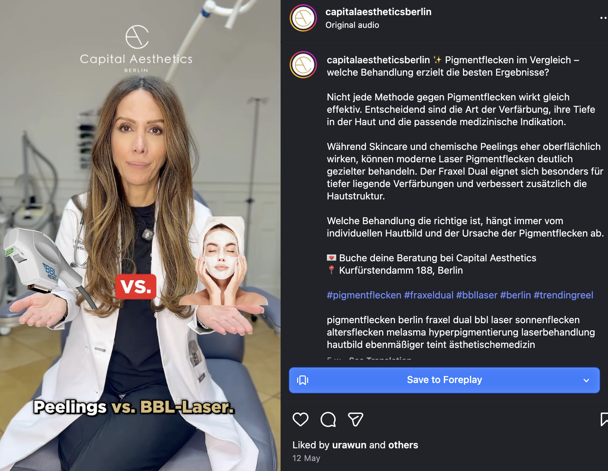
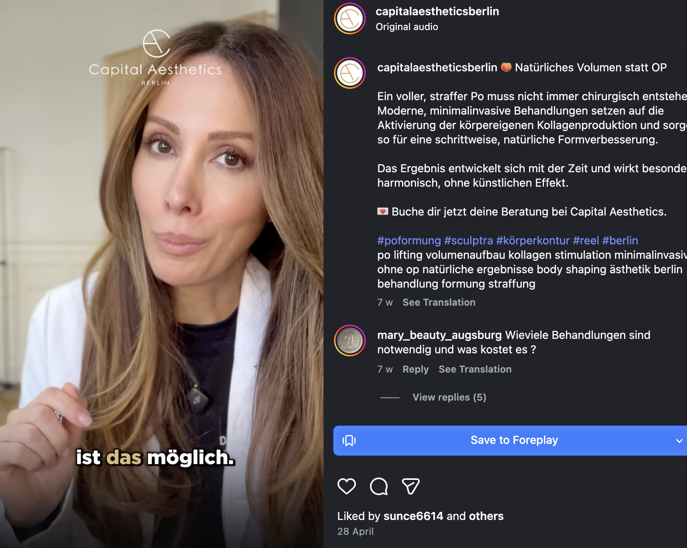
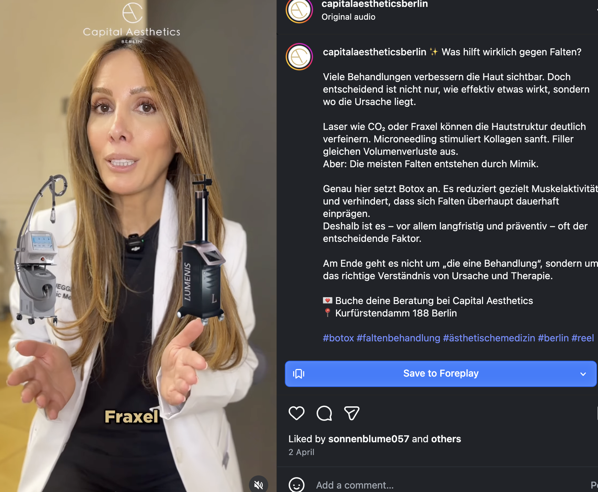

Capital Aesthetics · SEO & GEO
Gefunden werden, wenn es zählt.
Wenn jemand in Berlin die richtige Behandlung sucht, ist Capital Aesthetics die Antwort, in der Google-Suche und in KI. Genau dahin arbeiten wir in den nächsten Monaten.
22. Juni 2026 · Vorbereitet für Capital Aesthetics
Inhalt
Dieses Deck bündelt die laufende SEO- und GEO-Strategie: Roadmap, Content-Roadmap, KI-Sichtbarkeit, Struktur, Umsetzung und Messung werden monatlich weitergeschärft.
Was sich durch GEO verändert und welche Signale heute zählen.
02 RoadmapWas erledigt ist, was anläuft und wo die nächsten Schritte liegen, inklusive technischer Fixes.
03 Content-RoadmapCluster, Suchgruppen und die Frage, welche Treatments zuerst Arbeit bekommen.
04 KI-SichtbarkeitWas ChatGPT, Gemini & Co. heute über Capital sagen und welche Rückfragen auftauchen.
05 Struktur & UmsetzungSeitenarchitektur, interne Links, Plattformen, YouTube und Repurposing.
06 Review-Generierung (!)Aktiv mehr Bewertungen über Automatisierung und Empfang, ein zentraler Wachstumshebel.
Monat 1
- GEO-Baseline: Werden wir in LLMs gefunden?
- Analyse und Content-Plan
- Erste Fixes inkl. Schema-Markup (unsichtbares Script, das Google & KI wichtige Infos liefert)
- Content-Verbesserungen pro Cluster
- Seitenstruktur
- Technische Verbesserungen: erst nach Google-Search-Console-Zugriff und Freigabe sauber umsetzbar
Capital Aesthetics (parallel im Team)
- Platform-Hygiene, Listings aktualisieren
- Review-Generierung
- Review-Antworten
- YouTube
Die richtigen Zugänge bekommen, vor allem Google Search Console. Danach können die technischen Punkte aus der früheren Analyse geprüft, priorisiert und geschlossen werden.
Technik: bekannte Themen wieder handlungsfähig machen
Die technische Analyse von Quno hatte bereits erste Themen sichtbar gemacht. Danach fehlte der Zugriff bzw. die Freigabe zur Umsetzung, deshalb wurden die Punkte nicht sauber geschlossen.
Schon erkannt
Technische Basis-Themen wie Indexierung, Weiterleitungen, interne Links, strukturierte Daten und Seitenqualität waren bereits auf dem Radar.
Warum es hängen blieb
Ohne verlässlichen Google-Search-Console-Zugriff lässt sich nicht sauber prüfen, welche Fehler aktiv sind, welche URLs betroffen sind und ob Google Fixes akzeptiert.
Nächster Schritt
Zugänge wiederherstellen, technische Punkte priorisieren und als kleine Fix-Liste abarbeiten. Danach monatlich prüfen: Was ist gelöst, was bleibt kritisch?
Das ist kein neues Strategieprojekt. Es ist technische Hygiene, damit gute Behandlungsseiten von Google sauber gefunden, verstanden und angezeigt werden.
Monat 2 & 3: Umsetzen, dann neu priorisieren
Monat 2: Content-Verbesserungen umsetzen
P1 finalisieren, bei P2 und P3 so weit kommen wie möglich. Pro Cluster:
- Seiten-Verbesserungen (Content & Links)
- Google-Business-Posts
- Zusätzliche Seiten
- YouTube-Briefing
GEO-Reporting-Update: Hat sich schon etwas verändert? Vorteil: GEO kann schneller wirken als SEO.
Monat 3: Repriorisierung
Cluster neu priorisieren auf Basis erster Ergebnisse aus Monat 1 und 2: Was hat funktioniert, wo lohnt der nächste Fokus?
SEO macht sichtbar. GEO macht empfehlbar.
SEO bringt Behandlungsseiten in die Google-Suche. GEO hilft KI-Systemen, Capital Aesthetics als vertrauenswürdige Empfehlung einzuordnen.
Indexierung, Ladezeit, technische Fehler, Schema für Behandlungen und Ärzt:innen.
Behandlungsseiten, Themen-Hubs, interne Links, klare Zuordnung pro Standort und Thema.
Bestehende Seiten verbessern, neue Treatments sauber anlegen, Magazin nur bei größeren Fragen.
Für Local SEO wichtig, für GEO noch wichtiger: Bewertungen, Services, Posts und konsistente Daten.
Stärkeres Signal als Instagram: erklärende Videos, sichtbare Ärzt:innen-Expertise, Google-Sichtbarkeit und wiederverwendbare Inhalte.
Jameda, Doctolib, Herstellerlisten, Branchenprofile: externe Bestätigung für Praxis und Ärzt:innen.
Erwähnungen, PR, Links und Profile helfen Google und KI, Capital als echte Entität einzuordnen.
Für GEO reicht Website-Text allein nicht. KI-Systeme suchen externe Vertrauenssignale: Bewertungen, Profile, Videos, Erwähnungen, Links und konsistente Informationen. EEAT-Hintergrund
Baseline: Was wir in den Behandlungsseiten nachziehen
Die KI-Antworten zeigen, welche Fragen vor einer Empfehlung offen bleiben. Diese Punkte werden in Seiten-Updates übersetzt: sichtbarer Text, FAQ, interne Links und wo sinnvoll Schema/strukturierte Daten.
Premium ist neutral — der Wert muss erklärt werden.
Die KI liest Capital Aesthetics als hochwertige Option, weist aber auf unklare Preise hin und empfiehlt ein Erstberatungsgespräch, um zu prüfen, ob es sich lohnt.
Dr. Brüggemann ist ein starkes Signal — aber die Rolle muss eindeutig sein.
Für KI und Patient:innen sollte klar sein: macht sie die Behandlung selbst, supervisiert sie, oder behandelt ein anderes Teammitglied?
Erfahrung schlägt reine Geräte-Nennung.
Bei Ultherapy, Endolift und Sculptra fragt die KI nach Behandlungsvolumen, Protokoll, Indikation und realistischen Ergebnissen.
Jede Rückfrage wird zur Seitenaufgabe: Copy ergänzen, FAQ/Snippet prüfen, passende interne Links setzen und Schema-Briefing vorbereiten. Danach testen wir monatlich neu. → Detaillierte GEO-Analyse · Bonus: EEAT
EEAT: Warum Google und KI ärztliche Vertrauenssignale brauchen
Bei ästhetischer Medizin reicht es nicht, eine Behandlung zu beschreiben. Google und KI-Systeme müssen verstehen, warum genau diese Praxis, diese Ärztin und dieses Team vertrauenswürdig sind.
Experience
Wird sichtbar, dass die Behandlung regelmäßig durchgeführt wird? Beispiele: echte Fälle, Behandlungsvolumen, typische Indikationen, realistische Ergebnisse.
Expertise
Ist klar, wer medizinisch verantwortlich ist? Ausbildung, Spezialisierung, Geräte-Erfahrung, Protokoll und Rolle von Dr. Brüggemann sollten eindeutig sein.
Authority
Gibt es externe Bestätigung? Herstellerlisten, Plattformprofile, Reviews, Erwähnungen, YouTube, Google Business und konsistente Informationen zu Praxis, Ärzt:innen und Behandlungen.
Trust
Sind Risiken, Preise, Ablauf, Grenzen und Nachsorge transparent? Genau diese Punkte nennt die KI als Rückfragen vor einer Empfehlung.
Jede priorisierte Behandlungsseite sollte nicht nur erklären, was die Methode ist, sondern auch: wer behandelt, warum das Team qualifiziert ist, welche Erfahrung vorliegt und welche Entscheidungshilfe Patient:innen bekommen.
Content-Strategie & Priorisierung
„Themen wählen wir nach Geschäftswert und Wettbewerb. Wir optimieren auf Klicks, die Umsatz bringen, nicht auf Traffic allein."
Priorität nach drei Faktoren
- Business-Input von Lorena
- Suchpotenzial (Volumen × aktuelle Position)
- Wettbewerb
Abschnitt
Ein Treatment, mehrere Suchgruppen
Ein Cluster ist nicht nur ein Keyword. Wir bündeln Suchanfragen nach Absicht: lokal, preisbezogen oder allgemein. Priorisiert wird dort, wo der Traffic wahrscheinlich Patient:innen bringt.
„Sculptra Berlin” ist näher an einer Buchung als eine allgemeine Recherchefrage. Allgemeine Suchanfragen können Reichweite bringen, sind aber oft weniger relevant für lokale Patient:innen und schwieriger zu gewinnen.
Cluster P1: Höchste Priorität
Priorität nach drei Faktoren: Business-Input von Lorena, Suchpotenzial (Volumen × aktuelle Position) und Wettbewerb. Jede Seite wird verbessert.
| Cluster | Signale (Position) | Potenzial | Status |
|---|---|---|---|
| Ultherapy · Non-surgical Liftingohne OP – Gesicht | Lokal #7 · Preis #10 · Allgemein #14 | hoch | Nahe dran |
| Endoliftohne OP – Gesicht | Lokal #9 · Preis #10 · Allgemein #22 | hoch | Nahe dran |
| Sofwaveohne OP – Gesicht | Lokal #17 · Preis #4 · Allgemein #8 | hoch | Nahe dran |
| Thermage FLXohne OP – Haut | Lokal #2 · Preis #21 · Allgemein #9 | hoch | Nahe dran |
| Sculptra · Biostimulationohne OP – Falten | Lokal #6 · Preis #18 · Allgemein #14 | hoch | Nahe dran |
| Emfaceohne OP – Gesicht | Lokal #13 · Preis #10 · Allgemein #9 | mittel | Lücke |
| HydraFacialHaut & Laserzentrum – Gesicht | Lokal #14 · Preis #20 · Allgemein #14 | mittel | Daten fehlen |
| FaceliftOperationen – Gesicht | Lokal #23 · Preis & Allgemein nicht gemessen | hoch | Lücke |
| Tattooentfernung · GenericHaut & Laserzentrum – Haut | Lokal #34 · Preis #11 · Allgemein #21 | niedrig | Daten fehlen |
Cluster P2: Wichtige Wachstumsthemen
Vorhandene Nachfrage, aber dünne oder fehlende Signale. Erst validieren bzw. Seite anlegen, dann ausbauen.
| Cluster | Signale (Position) | Potenzial | Status |
|---|---|---|---|
| RadiesseRoot-URL, kein Kategorie-Hub | Lokal #10 · Preis #22 · Allgemein #18 | hoch | Lücke |
| PolynukleotideRoot-URL, kein Kategorie-Hub | Lokal #15 · Preis #18 · Allgemein #11 | mittel | Nahe dran |
| EMSCULPT NeoHaut & Laserzentrum – Körper | Lokal #22 · Preis #29 · Allgemein #1 | mittel | Lücke |
| miraDryohne OP – Körper | Lokal #12 · Preis keine Sichtbarkeit · Allgemein #6 | mittel | Lücke |
| Kryolipolyse (CoolTech)Haut & Laserzentrum – Körper | Lokal #7 · Preis #14 · Allgemein #11 | mittel | Nahe dran |
| Abnehmspritzeohne OP – Körper | Lokal #10 · Preis #3 · Allgemein #4 | mittel | Daten fehlen |
| Fadenliftingohne OP – Gesicht | Lokal #18 · Preis #19 · Allgemein #9 | mittel | Lücke |
| Emtone (Cellulite)Haut & Laserzentrum – Körper | Lokal #9 · Preis #15 · Allgemein #8 | mittel | Daten fehlen |
| VASER LiposuktionOperationen – Körper | noch nicht gemessen | mittel | Daten fehlen |
| Lidstraffung / BlepharoplastikOperationen – Gesicht | Lokal #22 · übrige nicht gemessen | mittel | Daten fehlen |
Cluster P3 · P4: Near-Wins & Sekundär
Niedriger Aufwand, schnelle Mitnahme. Saisonale und anliegenbasierte Themen, die bereits Klicks bringen. P4 = sekundär, erst validieren.
| Cluster | Signale (Position) | Potenzial | Status |
|---|---|---|---|
| Doppelkinn entfernenP3 · ohne OP – Gesicht | Lokal #4 · Preis #21 · Allgemein #17 | mittel | Nahe dran |
| LPG EndermologieP3 · ohne OP – Körper | Lokal #9 · Preis #4 · Allgemein #8 | mittel | Nahe dran |
| Nasenkorrektur ohne OPP3 · ohne OP – Gesicht | Lokal #10 · Preis #27 · Allgemein #42 | mittel | Nahe dran |
| AugenringeP3 · ohne OP – Gesicht | Lokal #11 · Preis #8 · Allgemein #13 | mittel | Daten fehlen |
| PicoSure · TattooentfernungP3 · Haut & Laserzentrum – Haut | Allgemein #13 · übrige keine Sichtbarkeit | mittel | Lücke |
| Hautstraffung ohne OP · HubP4 · ohne OP – Gesicht (sekundär) | Lokal #36 · Allgemein keine Sichtbarkeit | mittel | Lücke |
| BrustvergrößerungP4 · Operationen – Brust (OP, sekundär) | Lokal #30 · übrige nicht gemessen | hoch | Lücke |
Nicht jetzt: Bewusst zurückgestellt
Zwei Bereiche bespielen wir vorerst nicht über SEO, aus klaren strategischen Gründen.
Operationen (OP)
Bei operativen Eingriffen können wir im Wettbewerb nicht mithalten. SEO-Aufwand fließt dort vorerst nicht hin.
Botox
Botox stellen wir zurück: starker Wettbewerb und relativ geringer Geschäftswert pro Buchung. Bleibt Frequenzbringer, aber kein SEO-Schwerpunkt.
Verbesserung: Drei Hebel pro Cluster
Pro priorisiertem Cluster ziehen wir an drei praktischen Hebeln: Seiten sauber verwalten, größere Fragen im Blog/Magazin beantworten und die wichtigsten Links setzen.
Seitenverwaltung
Bestehende Behandlungsseiten schärfen: Suchintention, Preis-/Erstberatungs-Hinweise, FAQ, Snippets, interne Links und saubere Zuordnung zum richtigen Cluster.
Blog / Magazin
Aus Ärzt:innen- oder Social-Content wird nur dann ein Magazinbeitrag, wenn die Frage groß genug ist:
- Vergleiche und Entscheidungsfragen
- größere Behandlungsthemen
- Trendthemen mit echter Suchnachfrage
Kleinere Inhalte bleiben eher Google Business, YouTube oder FAQ-Erweiterung.
Links
Sicherstellen, dass die Seite genug Links bekommt: on-site (interne Verlinkung aus Hubs und Peer-Seiten) und off-site (Profile, Erwähnungen, PR).
Architektur: Jedes Thema bekommt den richtigen Ort
Jedes Thema bekommt den richtigen Seitentyp. Alle Typen verlinken auf die Behandlungsseiten und bündeln dort die Autorität.
Instagram: Zu klein für den Blog, zu wertvoll für nur Instagram



Repurposing-Loop
- Instagram / Ärztin-Content
- YouTube Short
- Google Business Update
- FAQ oder Abschnitt auf Behandlungsseite
- Anliegen-Seite prüfen, Magazin nur bei größerer Suchfrage
Beispiele
- Sculptra unterschätzt → Sculptra-Seite + GBP + YouTube
- Pigmentflecken-Vergleich → BBL/Fraxel + Anliegen-Seite
- Was hilft gegen Falten? → Cluster-Briefing + FAQ
- Volumen statt OP → Po-Formung / Sculptra / Lanluma prüfen
Wachstum: Ein vorsichtiger Planungskorridor, kein Versprechen
Basis: ca. 321 Non-Brand-Klicks/Monat auf 21.679 Impressionen, CTR rund 1,5%. Der Hebel liegt in besseren Snippets und klarerer Seitenstruktur.
| Zeitraum | Hebel | Planungskorridor |
|---|---|---|
| Monat 1 | Snippet- und Schema-Fixes: Titel, Meta, Berlin-Bezug, klarere Suchintention | ca. +60-80 Klicks / Monat |
| Ab Monat 2 | Content-Verbesserungen parallel: Sculptra, Kryolipolyse, Doppelkinn-Preis, Endolift | zusätzlich ca. +120-160 Klicks / Monat |
| 4-Monats-Korridor | Priorisierte Cluster statt alle Themen gleichzeitig | ca. 480-550 Non-Brand-Klicks / Monat |
Möglich wird die frühere Wirkung dadurch, dass Snippet-Fixes und Content ab Monat 2 parallel laufen statt nacheinander. Der theoretische Ceiling ist höher, das ist aber eher 12+ Monate.
Reviews: Aktiv mehr Bewertungen generieren
Bewertungen sind ein eigener Wachstumshebel: lokale Rankings, Snippet-CTR und zunehmend KI-Antworten. Aktuell zu wenige, das ändern wir jetzt aktiv.
Automatisiert (Qunosuite)
Bewertungsflow mit Filter: zufriedene Patient:innen werden nach dem Termin automatisch um eine Google-Bewertung gebeten.
Persönlich am Empfang
Personal fragt zufriedene Patient:innen direkt nach dem Termin. Größter Hebel, kostet nichts, braucht nur ein kurzes Briefing.
Arbeitsrahmen: Zusammenarbeit & Rollen
Neuer Ansatz wegen begrenzter Team-Zeit: klare Rollen und feste Kommunikationswege.
Rollen
Marco
Strategie & Execution.
Lorena
Freigabe & Support, wo nötig.
Sofia
YouTube (Input von Marco).
Kommunikation
Bi-weekly Meeting
Tasks updaten und erklären.
WhatsApp-Gruppe
Operatives kurz besprechen.
Wichtige Updates & Fortschrittsberichte.